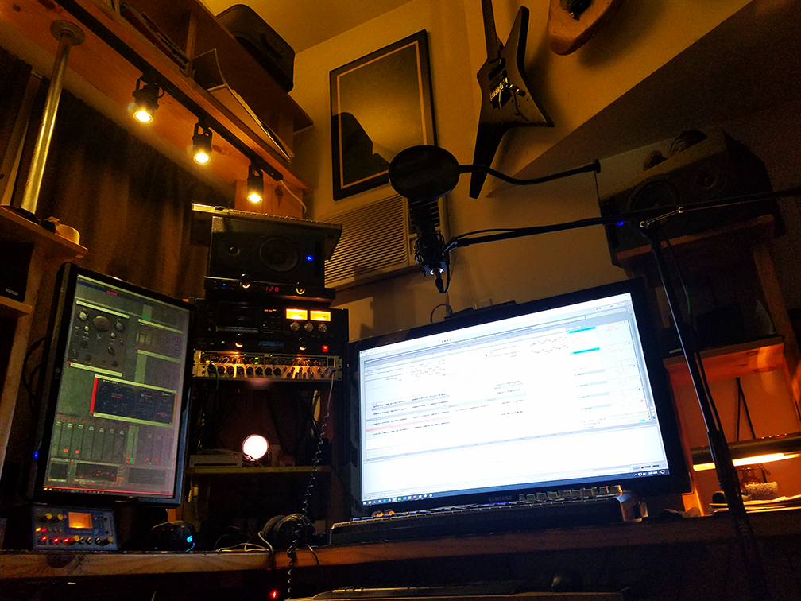

MUSIC
Vocals,
Studio Work,
& Collaborations

My vocal, instrumental, and mixing
contributions to various projects
Overview
Despite predominantly being a solo artist over the years, there have been times when I've been fortunate to work with other talented musicians, especially singing for them. In the past, I've also contributed guitar, piano, arrangement, and mixing work to various projects. I'll highlight some of my favorites here.Film
To date, I've been hired to act in two small independent films. Being more of a musician than an actor really, part of my contract was to produce a little music for these projects as well. Here's an arrangement of "Auld Lang Syne" I wrote, produced, and sang on for a very cool film entitled "3 Days on the Cross," written and directed by Aaron Martinez. In this ending scene, our wounded protagonist loses his struggle and we cut to the end credits at a peak moment in the song. I'm quite proud of how this one came out, and everyone involved with the film did a stellar job.Auld Lang Syne from 3 Days on the Cross
Jordan Tanner - Arrangement, Piano, Vocals, Mixing
Vocal Work
Sometimes a client (or friend) will come to me and want me to lay some vocals down on their track. This may require me to also write the melody and lyrics in addition to actually singing or they may have the parts written beforehand. I'll outline my contribution to each below.Ben Didelot - "Baby, Don't Lose That Feeling"
A Nashville producer formally employed at Tree Sound Studios in Atlanta, Ben has a relationship with Dr. Luke's "Prescription Songs" label and asked me to collab on an 80's-inspired retro tune with him for the label. Initially given the working title of "White Lambo," the synth-heavy beat caught my attention and I began writing lyrics straight away. My idea was to have young people racing through the town at night, having the time of their lives, but realizing that it would only be a fleeting moment, and so they should hold on to it. The chorus repeats, "Baby Don't Lose That Feeling," hence the title. I also threw down an electric guitar solo at the end.Baby, Don't Lose That Feeling
Jordan Tanner - Lyrics, Melody, and Vocals
Ben Didelot - Composition, Mixing, Mastering
Brandon Caro - Various Tracks
Brandon is a former Navy combat medic who served (and was wounded) in Afghanistan in the mid 2000's. He is a great songwriter and guitarist, and came to me with several tracks ready for vocals. Over the three years we worked together on and off, we probably did about 25 songs of his. All the music and lyrics were prewritten, with electric guitar, bass, and drum tracks all ready to go. He had a very specific vision for the way he wanted it sung, and he would often instruct me down to the syllable on how we wanted it to sound. Having a love for 90's grunge bands such as Alice in Chains and Stone Temple Pilots as well as Tool, Brandon's music is often heavy and dark. For these songs I performed the vocals, vocal tracking and editing, and final mixing.Jordan Tanner - Vocals, Mixing, Mastering
Brandon Caro - Composition, Lyrics, Melody, Guitar, Bass, Drum programming, Backing Vocals
Steve Bundy - Radiohead "Creep"
Having met while working together on the film "3 Days on the Cross," composer Steve Bundy asked me to work with him on a Radiohead cover, "Creep." Being a huge fan of the band and already being familiar with the track, I laid down my interpretation of the vocals over Steve's arrangement and composition. I imagine we'll be doing more of these."Creep" - Radiohead cover
Jordan Tanner - Vocals, Mixing
Steve Bundy - Arrangement, Composition, Mixing
Engineering
Adam Rodgers - "Sheets"
While working the downtown Austin music circuit I was fortunate enough to meet the very talented Adam Rodgers, another solo artist working down there. He had a few acoustic tunes written that he wanted to lay down, so he came in to the studio and I acted as engineer while he played and sang. My favorite song of the batch was "Sheets.""Sheets" - Adam Rodgers
Jordan Tanner - Engineer, Mixing
Adam Rodgers - Music, Lyrics, Guitar, Vocals